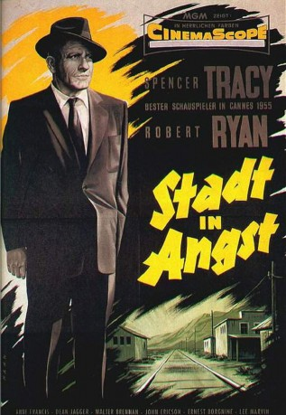

#4689 Stadt in Angst
Alternativ: Bad Day at Black Rock
Auszeichnungen: für 3 Oscars nominiert
 
 IMDB-Wertung: 7.8 / 10
IMDB-Wertung: 7.8 / 10  Metascore: 0
Metascore: 0 
Die Bewohner von Black Rock begrüßen den geheimnisvollen, einarmigen Fremden John J. Macreedy auf ihre Art: Er darf gleich wieder verschwinden. Oder sie sorgen dafür, dass er in einer Holzkiste verschwindet.Als man ihn bedroht und gewalttätig angreift, reagiert er absolut kaltblütig.
Jahr: 1955
Dauer: 78 Minuten
FSK: 12
Land: USA Studio: MGMTonspuren:
Untertitel:
Auflösung: 1080p (1920x1080) Größe: 2048 MB
Genre: Krimi, Drama, Mystery, Thriller, Western
Regisseur: John Sturges
Drehbuch: Chris Kentis
Soundtrack:
Darsteller:
 Spencer Tracy als John J. Macreedy
Spencer Tracy als John J. Macreedy Robert Ryan als Reno Smith
Robert Ryan als Reno Smith- Anne Francis als Liz Wirth
 Dean Jagger als Tim Horn
Dean Jagger als Tim Horn Walter Brennan als Doc Velie
Walter Brennan als Doc Velie- John Ericson als Pete Wirth
 Ernest Borgnine als Coley Trimble
Ernest Borgnine als Coley Trimble Lee Marvin als Hector David
Lee Marvin als Hector David- Russell Collins als Mr. Hastings
 Walter Sande als Sam
Walter Sande als Sam Harry Harvey als First Train Conductor , uncredited
Harry Harvey als First Train Conductor , uncredited Francis McDonald als Tall - White-haired Cafe Lounger , uncredited
Francis McDonald als Tall - White-haired Cafe Lounger , uncredited- Walter Beaver als Cafe Lounger , unconfirmed
- Billy Dix als Cafe Lounger , unconfirmed
- Mickey Little als Cafe Lounger , unconfirmed
- K.L. Smith als Cafe Lounger , unconfirmed
- Robert Griffin als Second Train Conductor , uncredited
- Bobby Johnson als One of Two Porters , uncredited
Datei: X:\1950-1959\Stadt in Angst (1955, FSK12, 1920x1080).mkv seit 04.11.2016
Festplatte: HD 1900-1970
 Es gibt insgesamt 141 Filme in der Gruppe '1950-1959'
Es gibt insgesamt 141 Filme in der Gruppe '1950-1959'